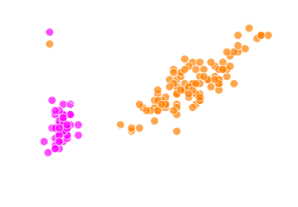

|
|


This page serves as a learning tool to assist in understanding a single perceptron unit and its applications, outside of multilayered neural networks, with C++ and Python. Multilayered neural networks are the talk of the town. However, let's not get ahead of ourselves. Instead, let's start with a discussion of the units within the network, perceptrons. Once the perceptron is understood, a neural network can follow.
This page is not meant to be an exhaustive source of perceptron knowledge. It is meant to be breif and straight to the point. Additionally, this page may serve as a breif introductory comparison between C++ and Python.
Let's describe a perceptron by a function f. The mathematical model for a typical perceptron is a simple step function (1), where τ is called the threshold. The function can be rewritten so that the inequalities are set to zero (2), where the bias b = -τ. This is called a boolean function, because its output can only be either 1 or 0, which corresponds to true or false. A graph of the step function is shown to the right. It's no coincidence that it looks like a step.
|
|

To make things more compact, we can increase the size of both vectors to n + 1 and force the first component of the input vector to be -1 and the first component of the network vector to be the threshold τ, so that the first product in the sum is -τ. Alternatively, we can force the first component of the input vector to be 1 and the first component of the network vector to be the bias b (4).

A perceptron unit with specified weights can be used to make simple decisions. For example, a perceptron unit could be used to determine whether or not one should get up in the morning. The input vector could hold boolean values for good wheather, job duties, errands to run, hobbies to do, friends to visit, fitness goals, hungry and poor hygeine, each being 0 or 1 for true or false. The weights of which correspond to their importance. The bias could represent one's motivation. Since b = -τ, a greater bias lowers the threshold of the perceptron. After feeding the data into the perceptron, if it outputs a 1, you should get up. Otherwise, take it easy.
Below is the code for a perceptron in C++ and Python. The C++ code is more in depth and shows more clearly what is going on. In general, C++ syntax is bulkier than Python, but allows for more control over the program. A lot of what is explicitly defined in C++ is done "behind the scenes" in Python. Nonetheless, moving forward, it will be easy to see that the two languages share a lot in common.
Python |
C++ |
||||
|
|
A more interesting application uses the perceptron training algorithm. This enables the perceptron to compute the correct network given a training set, which is a set of input vectors and their expected outputs or target values. If a large enough representative sample of input vectors are in the training set, the network weights computed by the training algorithm can then be used to classify all the data from which the training set was sampled, as long as the data is linearly separable.
The condition that the data must be linearly separable comes from the mathematical model of the perceptron. In 2 dimensions, given an input vector ( 1, x, y ) and a network vector ( b, ω1, ω2 ), the dot product is b + ω1x + ω2y, and the inequalities become b + ω1x + ω2y > 0 for an output of 1 and b + ω1x + ω2y <= 0 for an output of 0. Replacing the inequalities with an equals sign creates a line (5).

Therefore, the perceptron can only classify data that can be separated by this line. This is also true for n dimensions in which the line is a hyperplane.
The training algorithm is as follows:

This algorithm is slighly different than other perceptron learning algorithms in that the output vector is conditioned to exactly equal the target vector before stopping the loop. This is always possible with the appropriate weights, as long as the data is linearly separable. If the data is not linearly separable, an infinite loop may ensue.
A class Network is created in Python and C++ to store everything we need to start training and testing the perceptron. The bias coeficient in the input vectors is added automatically to make inputing data into the perceptron and learning algorithm easier.
Python |
C++ |
||||
|
|
To demonstrate, the iris dataset will be used. It contains measurements of iris flowers of three different species. The perceptron will be trained to differentiate between the iris setosa and the others (iris virginica and iris versicolor) from sepal and petal length measurements. The training process is performed on the complete data set and animated below. If your browser does not support animated png files, please switch to one that does. The aforementioned line is updated with the updated weights after each pass through the for loop. The line stops updating when the output equals the target values. After the training algorithm completes, everything to the left of the aforementioned line gives an output of 1, and everything to the right of it gives an output of 0.

The idea is that the final weights used to construct the line that separates the iris setosa species from the others can now be applied to a new sepal and petal length measurement of an unknown iris species to classify it.
To simulate this idea, the program below takes a randomized sample from the setosa and others data to train the preceptron. The size of each sample is specified by the user's input. Then, the network that was computed using the samples is applied to the full data set. Note that the network changes with varying accuracy each time you run the program, when lower sample sizes are used. Obviously, a larger sample size will yield more accurate results. Give it a try.
Python |
C++ |
||||
|
|